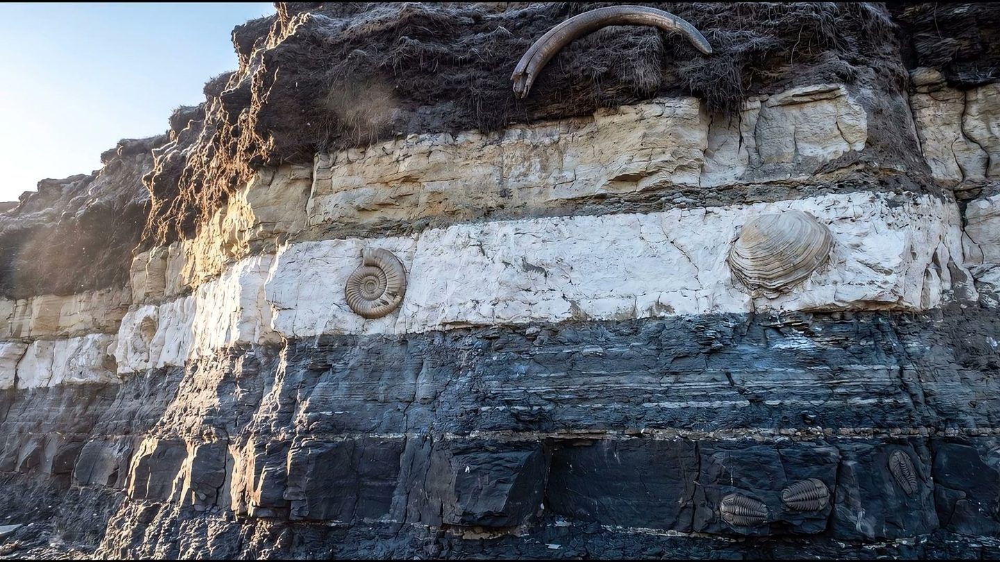
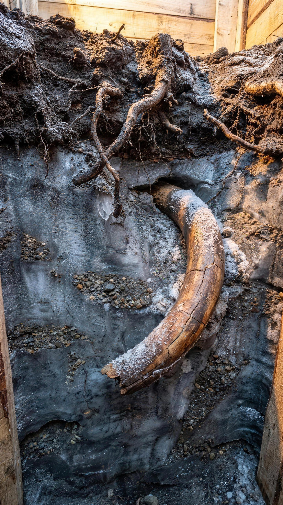
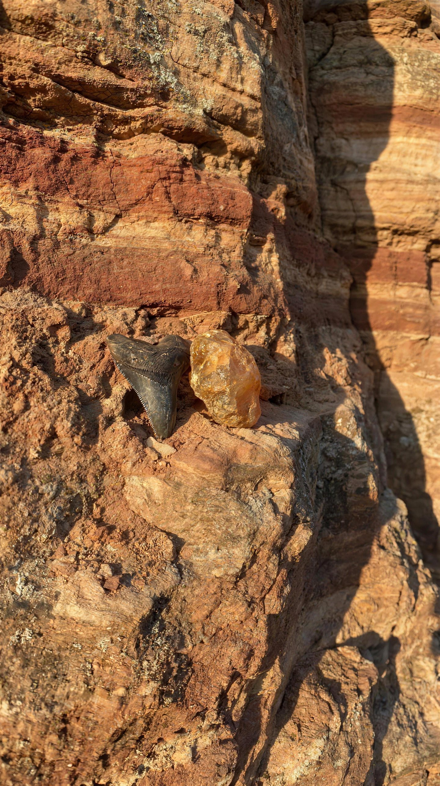
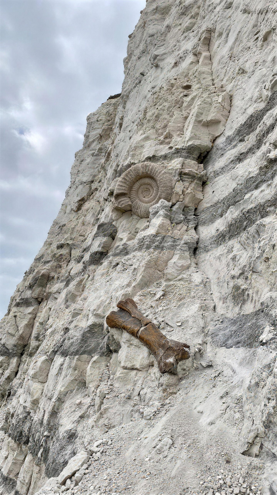
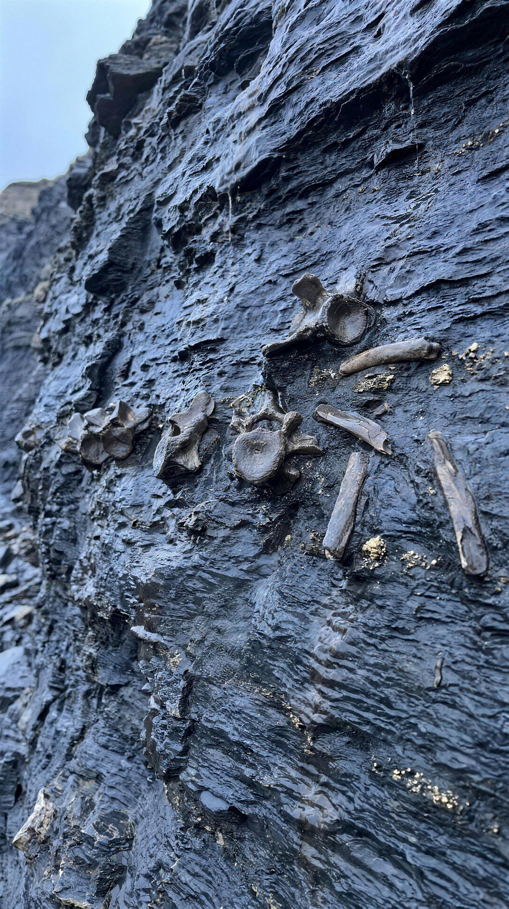
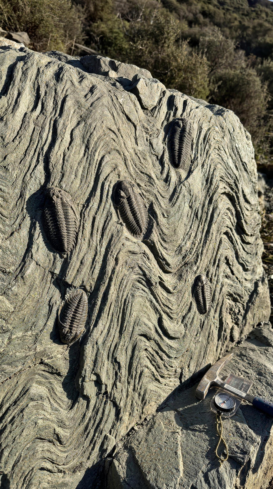
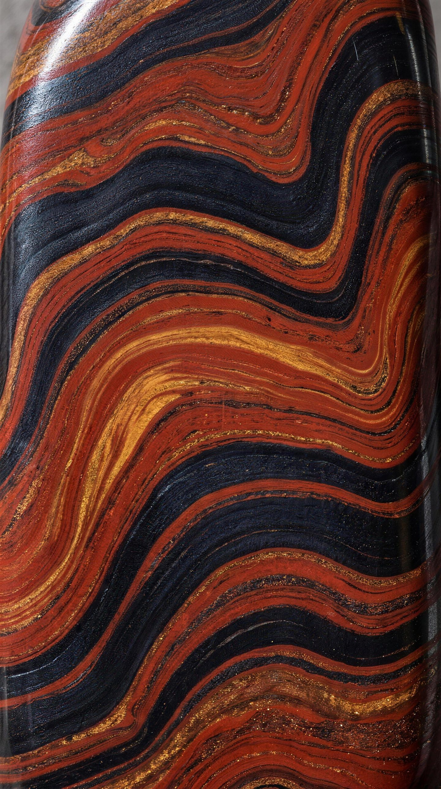
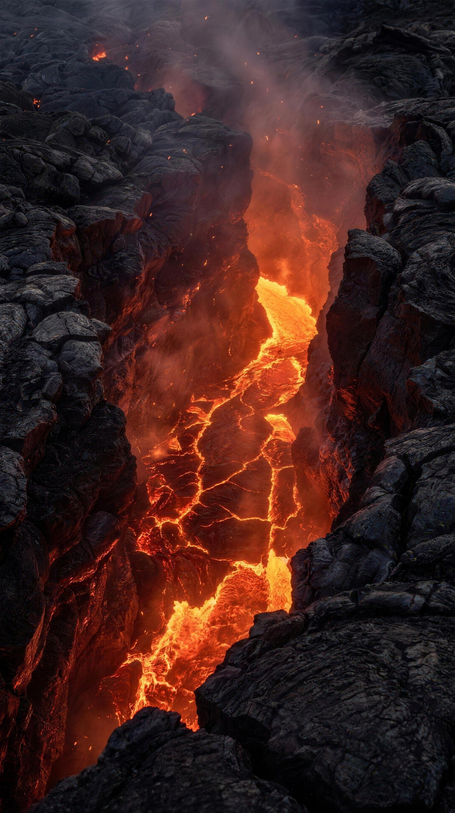

Спуск
вглубь времени
Под вашими ногами — архив планеты. Каждый метр вниз — миллионы лет назад. Листайте: мы начинаем бурение.
Листайте вниз, −4,5 млрд лет

Под вашими ногами — архив планеты. Каждый метр вниз — миллионы лет назад. Листайте: мы начинаем бурение.


Первые метры — почва и ледниковые отложения. Здесь, в вечной мерзлоте, лежат бивни мамонтов и черепа пещерных медведей: эпоха льда закончилась геологически вчера.



Песчаники кайнозоя. В этих слоях — зубы мегалодона, крупнейшей акулы в истории, и янтарь: смола эоценовых лесов с застывшими навсегда насекомыми.



Белый мел и мергель — дно мелового моря. Здесь заканчивается мезозой: зубы тираннозавра и кархародонтозавра, черепа трицератопсов, перламутровые аммониты. Верхняя граница этого слоя — след удара астероида.


Тёмные сланцы юрского океана. В них — ихтиозавры с глазами размером с блюдце, окаменелое дерево триаса и первые шаги эпохи гигантов.


Смятые в складки сланцы. До динозавров отсюда дальше, чем от динозавров до вас. Трилобиты с фасеточными глазами из кальцита, морские лилии, первые рыбы — жизнь учится видеть, ходить и кусать.

Полосатые железные руды и строматолиты — окаменевшие маты первых бактерий. Почти четыре миллиарда лет планета жила без глаз, без раковин, без свидетелей. Эти полосы — её дыхание.

Глубже осадочных архивов — только огонь, из которого всё началось. Дальше человек не бурил. Но у дома есть объект и с этой глубины — вернее, с такой же границы ядра и мантии другой планеты.
Всё, мимо чего вы спустились, — бивни, зубы, аммониты, трилобиты и даже вещество мантии чужой планеты — есть в каталоге дома. Поднятое, атрибутированное, оформленное.
 Трицератопс
Трицератопс Окаменелое дерево
Окаменелое дерево Ископаемые рыбы
Ископаемые рыбы Минералы Земли
Минералы Земли Палласит Сеймчан
Палласит Сеймчан